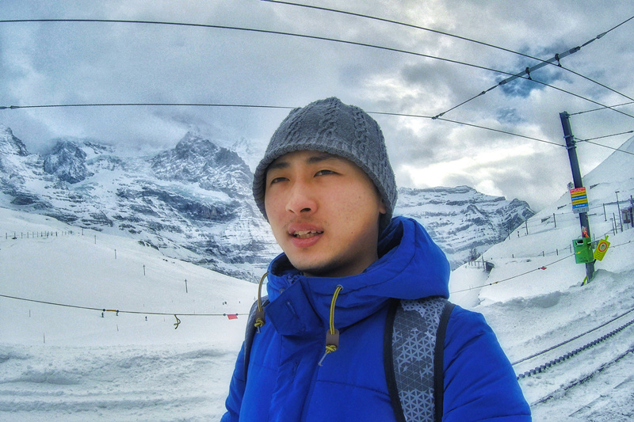
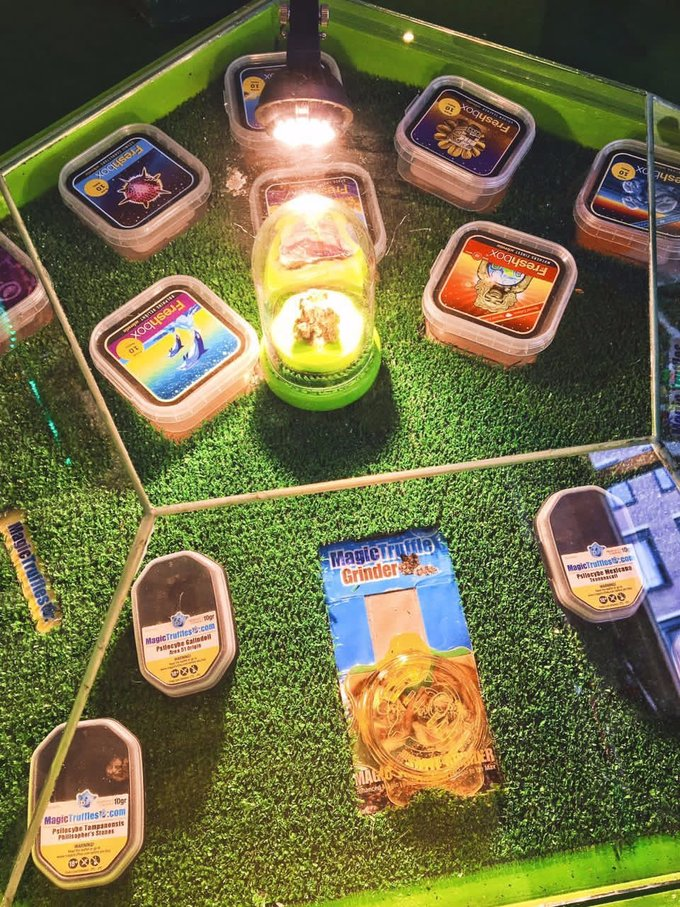

正文:
这个问题，一定不会有绝对的答案，旅行给我们带来的影响只会因人而异。
在我之前的3398个回答中就至少说了3398段故事来告诉大家“旅行有没有改变自己？”。而大家所能做的就是从别人的故事中去寻找自己的影子，至于结果还是需要你自己去亲身经历。所以，那我也用自己的故事来回答此问题。嗯，我也是个会讲故事的人呵呵～
我认为，
大部分人不是可能通过旅行改变自己的，但是可以通过旅行丰富自己。对我而言，旅行确实改变了我，但并非完全。旅行改变了我的部分性格，追求，社交圈和世界观。而当自己出去旅行之后，更确信了一个真相，就是“我真的好穷”(┬＿┬）
接下来，故事开始了。大家嗑嗑瓜子，啃啃鸭脖，往下看吧。文中照片均由本人拍摄。
———————————————
点赞满百，接着讲故事。
———————————————
海滨韦斯顿，英国洛杉矶，美国墨尔本，澳大利亚关岛，美国普吉岛，泰国 罗马，意大利（许愿池旁，一对情侣正在求婚）巴塞罗那，西班牙
罗马，意大利（许愿池旁，一对情侣正在求婚）巴塞罗那，西班牙作为一个九十年代出生的孩子，出去旅行没有以前那样困难。而且这个年代大多又是独生子，小的时候我也随父母去过不少地方。所以如果非要问自己为什么会不知不觉的爱上旅行，那我只能认为受童年的影响吧。在这个世界上乱蹦的23年里，我也走过了4大洲18个国家。我很知足，但也想走的更远，其中有两段长时间的旅行对我意义不凡。18岁那年，出去了43天。从上海一路向西，路过江苏、陕西、宁夏、甘肃、青海，到了西藏。然后又徒搭了川藏线到了成都。23岁今年，出去了80天（正好可以环游世界）。从香港出发去了法国、意大利、西班牙、荷兰、德国等欧洲数国。
至于很多人关心的钱，我需要先提一下，防止部分吃瓜喝奶看戏围观群众不明真相。我的第一次长途旅行是靠自己在肯德基兼职赚的钱，而且那个时候真的很穷，所以一路穷游。还好在初中情窦初开的年纪网上结交的笔友也给了我非常大的帮助（下面还会提到这个西北老娘们，就叫她S兄吧），并且临行前父亲还是塞了一小笔钱给我备用以防意外，即使我一直拒绝来着。第二次长途旅行是我工作一年后辞职去的，存了几个月工资，并且出门在外也有朋友靠，但这回一分都没有用家里的。
所以，我觉得。想去旅行，那就靠自己，学会独立。对于尚未步入社会的同学，也可以和父母撒个娇，以学业换旅行也是挺赚的。而且现在
斜杠青年那么多，大家赚钱的法子一定花样百多。ヾ(o◕∀◕)ﾉ
我一直认为18岁那年43天的“一路向西”是引发我此后对旅行狂热并一发不可收拾的导火索。那个时候刚接触亚洲航空，买下一张澳门飞曼谷的机票。当我告诉我爸打算一个人泰国旅行之后，他就开始给我滔滔不绝的渲染当地有多么多么危险，去了就要被拐走之类的。之后一阵子时不时还打探我有没有改变主意。最后，我竟然就屈服了。心疼机票钱~（其实泰国真不错，很适合第一次出国玩的小白。当时我爸也就是担心我才说了那么些话）于是我就决定去宁夏找童年笔友玩，这回我爸没阻止。
茶卡盐湖，青海在青旅认识的一群伙伴，青海 拉萨，西藏（认识不到一天的女生给我画的肖像，下面那本书是在青海遇到的史同学赠与我的，告诉我有缘再见）然乌，西藏（那天下着大雨，从波密出来徒步到米堆冰川路况越来越差，车都看到不到，后才得知波密下10公里塌方了死了人，检查站把路封了。于是冒雨徒步好不容易搭上辆还陷在河里了。不过终于安全抵达然乌。那晚住进了一家藏民家。）东达山口，西藏（在东达山口被师傅放下，海拔5008米，一路往下走，冻的手指都发青了。）竹卡村附近，西藏
拉萨，西藏（认识不到一天的女生给我画的肖像，下面那本书是在青海遇到的史同学赠与我的，告诉我有缘再见）然乌，西藏（那天下着大雨，从波密出来徒步到米堆冰川路况越来越差，车都看到不到，后才得知波密下10公里塌方了死了人，检查站把路封了。于是冒雨徒步好不容易搭上辆还陷在河里了。不过终于安全抵达然乌。那晚住进了一家藏民家。）东达山口，西藏（在东达山口被师傅放下，海拔5008米，一路往下走，冻的手指都发青了。）竹卡村附近，西藏然后我就攥着那么点钱出发了。先到了南京玩了那个时候很火的水魔方。之后坐了本来12个小时外加晚点了12个小时总共是24小时的火车硬座去了西安，并且听旁边大哥吹了一路的牛逼。在西安体验了人生中第一次青旅，第一次和老外们同屋，不但环境好而且新开业才20元/晚。在宁夏见了朋友，和他们一起玩了几天后。我又决定去西藏，我想都离得那么近了，为何不去？于是立马刷起了豆瓣，约到一个驴友后坐上夜车就去了甘肃，和刚认识不到一天的X同学抢了好几晚车票，终于买到两张西宁到拉萨的硬座。在青海湖，第一次和整车的陌生人一起浪，第一次和7个男生挤在军用帐篷里过夜。到了拉萨遇见一个女生，在生日当晚给我唱起了生日快乐，还为我画了幅肖像。隔日又遇到一个辞职旅行的女生，聊起了川藏线，于是一拍手组队成功决定徒搭川藏线。去青海湖是临时起意，去拉萨也是临时起意，走川藏线也是临时起意。每到一个地方，不忘给我爸说一声。然而直到我爸得知我要去318，才开始激动起来让我赶快回来。不过也不给我打个电话，光发短信了。现在想想，我爸也是真牛！这43天是我18年来过的最潇洒的43天，从平原到高原，从高原到雪山，长江、黄河、怒江、澜沧江、金沙江、雅鲁藏布江，一路转山转水转佛塔。这场旅行使我
变得更勇敢，见了更广的世界，也认识了不少朋友。回到学校，班级评选班干部。我不知道哪来的勇气，就上台竞选，之后就成了团支书，进了宣传部。在全系面前演讲，跳小苹果，管着班里的不少琐事。在这之前，就连初中的时候要选个小组长，我都不曾有勇气举起自己的手。是这场
旅行给我带来的勇气吗？我愿相信。
4年后的这个暑假，深圳。我终于又和宁夏的S兄见面了。其实这些年我们在线上的联系一直没有断过，但碍于地理差距和各自独立的生活，常见面也是不太可能的。她还是那时我心中的豪爽女子，而我似乎也产生了很大的变化。两个嘴欠的人吃个饭都能够把对方喷死，不过谈的更多的还是当年在宁夏一起玩耍的回忆。再后来看到她在朋友圈里的回复，更加确定这些年的
旅行给我带来了不少的性格改变。
第二段长时间的旅行刚结束不久，在欧洲一呆就是两个多月。不要问我为什么辞职，理由很多。你们可以去看“
哪个瞬间让你想要辞职？”这个知乎讨论。反正在打算离职前的一段时间，我就常常刷着这几个问题问自己。感谢在法国读书的朋友给我提供了落脚点，以贝尔福这座小城为根据地，我开始了欧洲之旅。在这里，预告一下会尽快写一篇贝尔福的游记，因为我真的非常喜欢它，而且几乎不会有中国游客特意前来，不过当地大学的华人留学生还是很多的。
马赛，法国尼斯，法国因特拉肯，瑞士阿姆斯特丹，荷兰（吃了奇幻蘑菇后，瞳孔放大）关岛，美国（开飞机）
布拉格，捷克罗马，意大利贝尔福，法国在欧洲一个人旅行的时间里，我追求把旅行的性价比提至最高，对想做的事决不放弃，对想吃的美食绝不遗漏，而那些不影响个人旅行快感的则能忍就忍，这就是健康的穷游精神吧。我愿意花一整天的时间在法国山林间骑行，结果下了大雨成了落汤鸡。坐了超久的大巴纵穿瑞士去了意大利，看了一路的美景。为了想感受曾经庞贝古城的辉煌，登上了维苏威火山。在荷兰守住自己的底线，尝试了一回奇幻蘑菇。一个人旅行的时候，所有事情需要自己亲力亲为，遇到困难遇到危险，最靠得住的还是自己。对于部分人，对于我来说，
旅行中所经历的事潜移默化的就影响了自己。
不要奢求旅行能给自己带来多大的改变，想通过旅行就能改变自己并不是一个负责任的态度，要想自己如何改变自己才对。最后，感谢耐心看完故事。
————————————————————————————————
没想到两天不到就满百赞了，难道大家很喜欢听我讲故事?
那好，我就聊聊关于我在荷兰吃了奇幻蘑菇的经历。
@糖果在评论里很感兴趣，记得来看。
————————我是更新线（2016.9.12） ———————-—————
首先，我要表明自己的态度。这个体验非同寻常，大家看看作罢。也许会令一部分人不适，那也没办法，谁让你非要往下看。关于奇幻蘑菇，我不推荐也不排斥，喜欢猎奇的朋友尝试一下即可，切勿深陷。如果非要和这个问题扯上关系的话，旅行让我越来越胆大了呗。
今年8月份，我在阿姆斯特丹的船宿上吃了奇幻蘑菇。过程大约持续了4个半小时，期间意识清醒，但有些画面不记得了。这东西的效果因人而异，不同人有不同的反应。我是好奇心怂恿着我一试，大家看完作罢。那天上的船就是照片这个，基本上就是一个船壳改成的酒店。
我在阿姆斯特丹住的船宿这个东西是一种天然的蘑菇，属于迷幻药的一种。在国内属于非法，但在荷兰合法。所以禁止以任何方式带出境。Magic Mushroom从07年由于一法国女孩吃了产生迷幻效果坠楼后便被禁止了，所以现在能买的是Magic Truffles。
“蘑菇店”里的展台阿姆斯特丹街头的Coffee Shop和Smartshop比超市还多，店里出售大麻和一些其他的周边。我比较怂，进了好几家都是只看不买，也不好意思问。看到一些年轻人在柜台鼓弄大麻也有点哆嗦。晚上下定决心去了阿姆斯特丹博物馆附近的一家“蘑菇店”。找店员要了适合新手的蘑菇，大妈估计见多了我这样的人，最后抛下一句anti-smokinng就接着看她的报纸去了。
阿姆斯特丹街头的蘑菇店买了蘑菇就赶紧回到了住处，我还是比较怂，虽然大妈推荐给我的是等级最低的Mexicana，但还是只吃了半盒。这个蘑菇味道非常非常难吃，又苦又涩还有点湿（需要冷藏），难以下咽，我就着水才勉强吞下。半个小时后感觉不适恶心想吐，但没有其他反应。于是我就去船甲板走了走，夜里的阿姆斯特丹港口真的冷，而且我还穿着夏装。
又过了十多分钟，我在船舱走廊里感觉走道扭曲伸缩了起来。看到迎面走来的一对老外，莫名的就笑了起来。那位女士穿的衣服就像一盘沙向我走来。
Magic Truffles回到房间，船舱的压抑感让我有些焦躁，倒在床上看着天花板。突然发现，上面浮现出很多不同的画面，有人像，大多的还是比较抽象的画面。再接着，天花板变成了云海，我能清晰看见那些云在飘。后来，云越来越多，还往下压着我的感觉。
我照了照镜子，发现自己的瞳孔变得非常大。特别容易目不转睛的发呆，还会莫名的笑出来。前三个小时，我不停的在船舱和甲板走动。后一小时，我洗了澡，躺在床上想睡觉。但兴奋的睡不着，一闭眼都是很奇怪的画面，特别抽象。
再之后听到奇怪的声音，看到窗外的海面上有一群天鹅，我就傻傻的跟它们玩了会儿。最后我觉睡着了，大约凌晨2:30左右。不清楚是效果没了，还是太困了，还是我喝下半瓶柠檬水缓解了。
————————————————————
还想接着听故事吗？
————————————————————